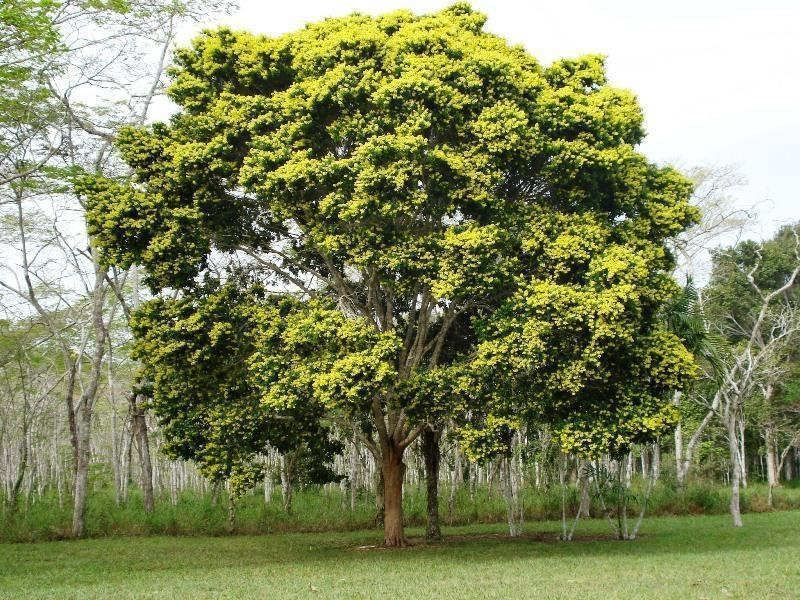

Pau-brasil
O pau-brasil foi a primeira atividade econômica exercida pelos portugueses na América Portuguesa durante o século XVI. A exploração do pau-brasil foi muito intensa, principalmente em uma fase conhecida como Período Pré-colonial, que se estendeu até meados da década de 1530.
O pau-brasil é uma árvore típica da Mata Atlântica (Paubrasilia echinata) e que no século XVI era conhecida pelos índios tupis de ibirapitanga. É uma árvore que pode alcançar até 15 metros e possui galhos com espinhos.
A árvore ganhou importância para os portugueses por conta da sua madeira, que poderia ser utilizada na construção de inúmeros objetos, principalmente a resina da madeira que era utilizada para produzir corantes.
Com a chegada dos portugueses ao Brasil, a árvore foi enxergada como mercadoria potencial para ser revendida na Europa e, assim, sua exploração foi logo iniciada.
Fernão de Loronha (ou Noronha) ganhou direito de exploração do território, em 1501, e, logo depois, recebeu a ilha de São João (atual Fernando de Noronha) como capitania. Fernão de Loronha, então, obteve o direito de explorar o pau-brasil e, por isso, foi proibido de importar a variedade asiática da árvore brasileira.
Em 1511, aconteceu a primeira exportação de pau-brasil para Portugal, quando 5 mil toras da árvore foram levadas para Portugal no navio chamado Bretoa. Nesse mesmo ano, o arrendamento dado a Fernão de Loronha teve fim e foi transferido para Jorge Lopes Bixorda, e, a partir de 1513, todo interessado a explorar o pau-brasil poderia fazê-lo, desde que pagasse os impostos devidos à Coroa (20%).
Com o tempo, o nome utilizado para se referir à madeira e ao corante foi sendo utilizado para nomear a nova terra. Isso aconteceu a partir de 1512, quando a mercadoria chegou ao mercado europeu. A nomenclatura da América Portuguesa foi algo que variou bastante durante os primeiros anos da presença portuguesa.
A exploração do pau-brasil, durante o século XVI, estava inserida no contexto da chegada dos portugueses na América. A chegada dos portugueses ao Brasil foi em 22 de abril de 1500, quando a expedição de Pedro Álvares Cabral avistou o Monte Pascoal, na atual região de Porto Seguro, no estado da Bahia.
A chegada dos portugueses ao Brasil deu início ao processo de exploração das terras. Esse processo só se tornou um processo colonizatório na década de 1530, quando foi implantado o sistema de capitanias hereditárias. Antes da implantação do sistema de capitanias, a presença dos portugueses era exclusivamente litorânea por meio de feitorias.
A exploração do pau-brasil pelos portugueses era acompanhada pelas feitorias construídas pelos portugueses em locais litorâneos da América Portuguesa. As principais feitorias construídas pelos portugueses, nesse primeiro momento de sua presença na América, foram as feitorias localizadas no Cabo Frio, Porto Seguro e Igarassu (Pernambuco).
As feitorias portuguesas eram basicamente locais nos quais os portugueses armazenavam toda a madeira extraída. Os portugueses perceberam que o trabalho de extração da madeira enquanto as naus estavam ancoradas no litoral brasileiro era muito caro e, por isso, foi proposta a construção de feitorias que armazenavam a madeira extraída para que, de tempos em tempos, uma nau viesse recolher as toras.
As feitorias eram cercadas por uma paliçada de madeira que os resguardava de possíveis ataques de povos indígenas hostis e de estrangeiros que, nesse caso, eram os franceses os grandes concorrentes dos portugueses na exploração do pau-brasil.
Nessas feitorias, os portugueses contratavam o trabalho dos indígenas para que eles realizassem o trabalho de derrubada das árvores.
Isso porque as árvores de pau-brasil não ficavam amontoadas umas próximas às outras, mas eram espalhadas pela floresta e, assim, o conhecimento do território pelos indígenas os possibilitava localizar as árvores com mais facilidade. A relação de trabalho era pelo escambo. Os indígenas extraíam e levavam as toras para as feitorias, e os portugueses retribuíam pagando-lhes com facas, canivetes, espelhos e outros objetos do tipo.
As boas relações com os indígenas eram uma condição essencial para o sucesso da feitoria, uma vez que era por meio do trabalho deles que a extração da madeira era realizada. A fortificação da feitoria ou sua construção próxima a um forte era também essencial, pois garantia a segurança dessa feitoria.
Isso porque, além dos povos indígenas hostis, os portugueses lidavam com os franceses que, nos primeiros anos do século XVI, invadiram as terras portuguesas (segundo o Tratado de Tordesilhas) para negociar com os indígenas e contrabandear pau-brasil para a Europa. Um exemplo foi a expedição de Paulmier de Gonneville que veio para cá em 1503 para tentar explorar o pau-brasil.
A extração da madeira seguiu sendo realizada até meados do século XIX, e a recuperação da quantidade de árvores na natureza somente aconteceu na segunda metade do século XX. A intensa exploração do pau-brasil quase levou a árvore à extinção e, ainda hoje, ela é considerada uma espécie ameaçada.
Curiosidades
Você Sabia...
Os historiadores apontam que na Europa medieval já se conhecia uma árvore semelhante ao pau-brasil. Essa, porém, era originária da Ásia, e é conhecida como Biancaea sappan. Os registros apontam que a madeira e o corante dessa árvore eram conhecidos por nomes como “brecilis” e “brezil”. Esse corante era utilizado para tingir tecidos na Europa, e esse nome circulava em diversas partes do continente, já nos séculos XII e XIII.

Por que o nome França Antártica?
O nome do pau-brasil é alvo de muita especulação e de debate entre os historiadores. O consenso atualmente é que o termo “brasil” fazia referência à resina encontrada na madeira que possui tom avermelhado. As historiadoras Lilia Schwarcz e Heloísa Starling sugerem que o termo “brasil” e todas as suas variações são oriundas do termo latino "brasilia", que significava “cor de brasa” ou “vermelho”

Nomes da América Portuguesa
A América Portuguesa foi chamada de diversos nomes como Ilha de Vera Cruz, Terra dos Papagaios, Terra de Santa Cruz e Brasil, por exemplo. A questão do nome do Brasil gerou certa polêmica, uma vez que alguns portugueses não aceitaram bem a substituição do nome como Pero Magalhães de Gandavo.

Você Sabia...
O pau-brasil (ou Caesalpinia echinata Lam, no seu nome científico) é uma espécie arbórea, nativa das florestas tropicais da costa brasileira. Sua maior ocorrência está na faixa da Mata Atlântica, trecho que compreende o litoral do Rio Grande do Norte ao Rio de Janeiro

Você Sabia...
Outra questão importante a respeito da nomenclatura do pau-brasil é que, até mesmo no tupi, o nome utilizado pelos nativos para se referir à árvore fazia menção à cor presente na madeira. O termo “ibirapitanga” significa “árvore vermelha”.
